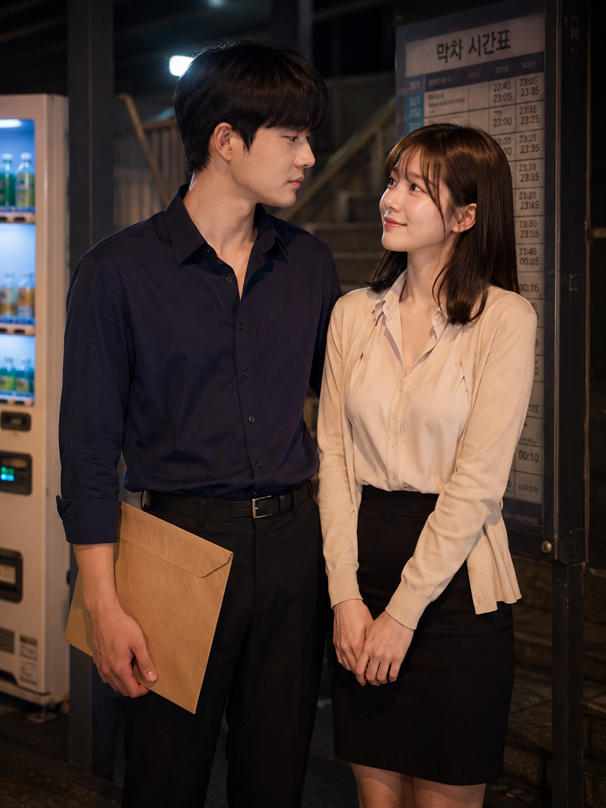

행사 준비가 예상보다 늦게 끝난 밤, 본사 건물 앞 버스 정류장에는 막차를 놓친 사람들 대신 한산한 바람만 남아 있었다. 유하린은 서류 봉투를 품에 안은 채 계단 아래에 서 있었고, 김시안은 그녀 옆 자판기에서 생수 두 병을 뽑아 들고 돌아왔다.
김시안"택시 잡히기 전에 좀 쉬어요."
유하린"괜찮아요. 오늘 많이 늦게까지 붙잡아서 죄송해요."
김시안"또 시작이네."
하린은 바로 입을 다물었다. 미안하다는 말이 반사처럼 튀어나온 뒤 스스로도 민망해진 얼굴이었다. 김시안은 병뚜껑을 열어 그녀 손에 쥐여 주었다.
김시안"오늘은 미안할 일이 없어요. 네가 안 잘랐으면 행사장 분위기 엉망 됐을 거예요."
하린은 생수병을 받으면서도 선뜻 마시지 못했다. 칭찬을 듣는 데 아직도 몸이 서툴렀다. 그는 그 조심스러움을 재촉하지 않고 계단 난간에 기대 섰다.
유하린"그래도 무서웠어요. 제가 괜히 앞서서 말한 건가 싶어서."
김시안"무서운데도 했잖아요."
유하린"김시안 씨가 뒤에 있어서요."
그 말이 나오는 순간, 하린은 자기 입으로 뱉고도 놀란 듯 고개를 숙였다. 밤공기가 갑자기 차가워진 것도 아닌데 귀 끝이 빠르게 붉어졌다.
유하린"아, 저... 그런 뜻으로 말한 건 아닌데."
김시안"무슨 뜻인데."
하린은 대답하지 못했다. 대신 서류 봉투 가장자리를 꼭 쥔 손에 힘만 들어갔다. 그는 그런 그녀를 조금 더 가까이 보며, 회사 복도에서 처음 만났을 때부터 이어져 온 익숙한 패턴이 오늘은 다른 쪽으로 꺾이고 있다는 걸 느꼈다. 무너질까 봐 기대는 게 아니라, 기대고 싶은 대상을 정확히 알고 있다는 쪽으로.
유하린"그냥... 김시안 씨가 있으면 제가 덜 창피해져요."
김시안은 잠깐 웃음을 삼켰다. 그 문장은 생각보다 훨씬 솔직했고, 그래서 더 가볍게 다루면 안 됐다.
김시안"하린 씨."
유하린"네."
김시안"나 앞에서도 그렇게 숨기지 마요. 다 보이니까."
하린의 숨이 짧아졌다. 도망쳐야 할 말인지 붙잡아야 할 말인지 판단이 늦는 표정이었다. 결국 그녀는 아주 작게 고개를 끄덕였다.
유하린"그럼... 조금 기대도 돼요?"
김시안은 대답 대신 그녀 손에서 서류 봉투를 받아 옆에 내려놓았다. 비어 난 손을 가볍게 감싸 쥔 뒤, 망설이는 눈을 끝까지 받았다.
김시안"조금 말고."
하린의 눈동자가 크게 흔들렸다. 눈을 피하지 못한 채 숨을 멈춘 그녀에게 김시안이 천천히 입을 맞췄다.

김시안은 계단 아래로 한 걸음 다가섰다. 자판기 형광등이 하린의 어깨선을 푸르스름하게 비추고 있었다. 그녀가 쥐고 있던 생수병 표면에 맺힌 물방울이 손끝으로 흘러내렸다.
김시안"조금 말고."
그 말에 하린의 눈동자가 크게 흔들렸다. 눈을 피하지 못한 채 숨을 멈춘 그녀에게 김시안이 천천히 입을 맞췄다. 첫 입맞춤은 가벼웠다. 아랫입술을 살짝 포갠 정도. 하지만 하린의 손에서 생수병이 빠져 계단에 부딪히는 소리가 나자, 김시안은 물러서지 않고 그녀의 허리에 손을 얹었다.
유하린"아..."
하린의 입술 사이로 새어나온 숨이 김시안의 입술에 닿았다. 그는 그 틈을 놓치지 않고 다시 입을 맞췄다. 이번에는 더 깊었다. 아랫입술을 천천히 빨아들이며 그녀의 떨림을 입술로 읽었다. 하린의 손이 허공에서 망설이다 그의 셔츠 앞자락을 붙잡았다. 가볍게, 하지만 놓지 않으려는 듯이.
김시안은 그녀의 허리를 감싼 손에 조금 더 힘을 주었다. 가디건 너머로 느껴지는 체온이 뜨거웠다. 하린의 입술이 살짝 벌어지자, 그는 혀끝으로 그녀의 윗입술을 쓸었다. 하린의 어깨가 작게 들썩였다.
김시안"숨 쉬어요."
유하린"쉬고... 있는데..."
김시안"아직 덜 쉰 얼굴인데."
그가 살짝 웃으며 말하자 하린의 볼이 더 붉어졌다. 김시안은 그녀의 가디건 소매를 손가락으로 살짝 밀어 올렸다. 손목 안쪽이 드러나자 하린은 반사적으로 팔을 당기려 했지만, 그가 손목을 부드럽게 감싸쥐었다.
김시안"여기 맥박."
유하린"그거... 보지 마요..."
김시안"이미 봤어요. 되게 빠르네."
그는 손목 안쪽에 엄지를 대고 맥박을 느끼며 하린의 눈을 들여다보았다. 그녀는 도망치고 싶은 표정이면서도 눈을 피하지 못했다. 김시안은 그 손목을 들어 입술을 갖다 댔다. 손목 안쪽, 얇은 피부 위로 맥박이 뛰는 지점에 가볍게 입을 맞추자 하린의 숨소리가 뜨거워졌다.
유하린"김시안... 씨..."
김시안"무서워요?"
유하린"무섭다기보다... 심장이 이상해요."
김시안"어떻게."
유하린"너무 빨리 뛰어서... 아플 것 같아요."
김시안은 그녀의 손목에서 입을 떼고, 대신 그 손을 자신의 가슴께로 가져갔다. 셔츠 너머로 그의 심장 박동이 하린의 손바닥에 전해졌다.
김시안"나도 그래요."
하린의 눈이 커졌다. 그녀의 손가락이 조심스럽게 그의 셔츠를 더듬었다. 심장 박동을 확인하려는 듯, 아니면 그저 더 가까이 닿고 싶은 듯. 김시안은 그런 그녀의 손을 셔츠 위에서 꾹 눌러 주었다.
김시안"알겠어요?"
유하린"네..."
그녀의 목소리가 젖어 있었다. 김시안은 그녀의 손을 놓지 않은 채 다시 얼굴을 가까이 가져갔다. 이번에는 입술을 포개는 대신, 코끝으로 그녀의 볼을 쓸었다. 하린의 피부에서 은은한 비누 향과 살내가 섞여 났다. 그는 그 향을 따라 턱선까지 천천히 내려갔다.
하린의 목이 뒤로 젖혀졌다. 가로등 불빛이 그녀의 목선을 따라 길게 그림자를 드리웠다. 김시안은 그 목선에 입술을 갖다 댔다. 목젖 바로 아래, 맥박이 뛰는 오목한 곳. 입술을 대자 하린의 몸이 작게 떨렸다.
유하린"하아..."
그녀의 입에서 새어나온 숨소리가 밤공기 속으로 흩어졌다. 김시안은 그곳에 혀끝을 살짝 댔다. 피부가 미세하게 들썩이고, 땀 냄새와 체취가 더 진하게 올라왔다. 그는 천천히 혀를 움직여 쇄골 쪽으로 내려갔다. 하린의 가디건과 블라우스 깃 사이로 드러난 쇄골 라인이 긴장으로 도드라져 있었다.
김시안"여기 뼈."
유하린"네...?"
김시안"쇄골. 예쁘게 나왔네요."
그가 쇄골에 입술을 대고 살짝 빨자 하린의 손이 그의 어깨를 움켜잡았다. 손톱이 셔츠 너머로 살짝 박혔다. 김시안은 그 반응을 느끼며 입술을 떼지 않고 더 깊게 빨아들였다. 피부가 붉게 변하는 게 어둠 속에서도 보였다.
유하린"거기... 표시 나면..."
김시안"내일 회사에서."
유하린"아..."
그녀의 목소리가 당황과 설렘 사이에서 갈라졌다. 김시안은 쇄골에서 입술을 떼고, 대신 손가락으로 그 자리를 쓸었다. 침이 묻어 반들거리는 피부가 가로등 불빛에 희미하게 빛났다.
김시안"가디건 입으면 가려질 텐데."
유하린"그런 문제가 아니라..."
김시안"그럼 무슨 문제."
하린은 대답하지 못했다. 대신 그녀의 손이 그의 셔츠 깃을 더 세게 움켜잡았다. 김시안은 그 손의 떨림을 느끼며 다시 그녀의 입술을 찾았다. 이번에는 처음보다 훨씬 깊은 입맞춤이었다. 혀를 밀어 넣자 하린의 입 안이 뜨겁게 열렸다. 그녀의 혀가 처음에는 움츠러들었지만, 곧 조심스럽게 그의 혀를 맞받았다.
둘의 혀가 얽히는 소리와 젖은 숨소리가 정류장 유리벽에 부딪혀 작은 울림을 만들었다. 김시안은 한 손으로 그녀의 허리를 감싸고, 다른 손으로는 뒷목을 받쳤다. 손가락 사이로 중단발이 부드럽게 스며들었다. 그는 그 머리칼을 움켜쥐지 않고, 대신 손가락으로 두피를 천천히 마사지하듯 쓸었다.
하린의 몸에서 힘이 빠졌다. 그녀가 그의 품에 기대듯 몸을 맡기자, 김시안은 그 무게를 그대로 받아 안았다. 가녀린 어깨와 잘록한 허리, 그리고 가슴이 그의 가슴에 닿았다. 블라우스와 셔츠 사이로 체온이 전해졌다. 그녀의 가슴이 숨을 들이쉴 때마다 그의 가슴을 부드럽게 압박했다.
유하린"김시안 씨..."
김시안"말해요."
유하린"저 지금... 다리가 풀려서..."
김시안"계단에 앉을래요?"
유하린"네..."
김시안은 그녀를 계단 쪽으로 이끌었다. 서류 봉투를 치우고 그녀를 계단에 앉혔다. 하린은 두 번째 계단에 걸터앉았고, 김시안은 그 앞에 한 계단 아래 서서 그녀를 내려다보았다. 시선의 높이가 바뀌자 하린의 눈에 긴장이 다시 스몄다.
김시안"이제 내가 올려다보는 거네."
유하린"그게... 불편하세요?"
김시안"아니. 되게 좋은데."
그는 하린의 무릎 사이로 한 걸음 더 다가섰다. 검은 H라인 스커트가 무릎 위로 살짝 올라가 있었고, 그 사이로 얇은 스타킹에 감싸인 허벅지가 드러났다. 김시안은 그녀의 무릎에 손을 얹었다. 스타킹 너머로 피부의 온기가 손바닥에 전해졌다.
김시안"여기까지 올려도 돼요?"
유하린"네...?"
김시안"스커트."
하린의 숨이 멎었다. 그녀는 잠시 망설이다가 아주 작게 고개를 끄덕였다. 김시안은 천천히 스커트를 무릎 위로 밀어 올렸다. 스타킹이 끝나는 지점, 허벅지 중간쯤에서 손을 멈추었다. 스타킹과 맨살의 경계선이 가로등 불빛에 은은하게 드러났다.
그는 그 경계선에 손가락을 댔다. 한쪽은 스타킹의 매끄러운 질감, 다른 한쪽은 맨살의 보드라운 감촉. 하린의 허벅지가 미세하게 떨렸다.
김시안"차가워요?"
유하린"아니요... 손이 따뜻해서..."
김시안"다행이네."
그는 손바닥 전체로 그녀의 허벅지를 쓸었다. 무릎에서 시작해 천천히 위로 올라갔다. 스타킹 위를 지나 맨살에 닿자 하린의 허벅지 안쪽 근육이 긴장으로 수축했다. 김시안은 그 긴장을 손바닥으로 느끼며 계속 쓸어 올렸다. 스커트 안쪽, 더 깊은 곳으로 손이 들어가자 하린이 그의 손목을 붙잡았다.
유하린"거긴..."
김시안"싫어요?"
유하린"싫은 게 아니라... 부끄러워요."
김시안"부끄러운 건 참아요."
그가 단호하게 말하자 하린의 손에서 힘이 빠졌다. 김시안은 손을 더 깊이 밀어 넣었다. 손가락 끝이 면 팬티의 가장자리에 닿았다. 그는 그 경계를 따라 천천히 손가락을 움직였다. 팬티와 살결 사이로 스며든 열기가 손끝에 전해졌다.
유하린"으응..."
하린의 입에서 작은 신음이 새어나왔다. 그녀는 민망한 듯 입술을 깨물었지만, 김시안이 팬티 너머로 손가락을 더 깊이 밀어 넣자 참지 못하고 숨을 토해냈다. 손가락 끝에 닿은 면 팬티가 미세하게 젖어 있었다.
김시안"젖었네."
유하린"그런 말 하지 마요..."
김시안"사실인데."
그는 팬티 위로 손가락을 움직였다. 천천히 원을 그리듯, 때로는 좌우로 떨듯. 젖은 면이 손가락의 움직임에 따라 미끄러졌다. 하린의 허벅지가 오므라들었다 벌어졌다를 반복했다. 그녀의 손이 그의 어깨를 더 세게 움켜잡았다.
유하린"하아... 아..."
김시안"소리 내도 돼요. 여기 우리밖에 없어."
유하린"그래도... 으응..."
김시안은 팬티를 한쪽으로 밀고 손가락을 직접 그녀의 살결에 닿게 했다. 질 입구 주변은 이미 애액으로 미끄러웠다. 그는 검지와 중지로 그 주변을 천천히 쓸었다. 손가락이 미끄러질 때마다 젖은 소리가 작게 났다.
김시안"여기, 느껴져요?"
유하린"네... 네..."
김시안"내 손가락."
유하린"느껴져요... 아..."
그가 손가락 끝으로 클리토리스를 살짝 누르자 하린의 허리가 반사적으로 들썩였다. 김시안은 그 반응을 확인하고 이번에는 손가락 두 개로 클리토리스를 좌우로 떨었다. 빠르게, 하지만 너무 강하지 않게. 하린의 숨소리가 점점 거칠어졌다.
유하린"거기... 거기 너무... 아아..."
김시안"좋아요?"
유하린"좋아... 으응...!"
그녀의 대답이 말끝에서 신음으로 바뀌었다. 김시안은 클리토리스를 떨던 손가락을 멈추고, 이번에는 질 입구 쪽으로 손가락을 옮겼다. 애액이 손가락을 타고 흘러내렸다. 그는 검지를 천천히 질 안으로 밀어 넣었다.
유하린"아...! 들어가...!"
김시안"한 손가락. 괜찮아요?"
유하린"괜찮아... 으으응..."
질벽이 손가락을 단단히 조였다. 따뜻하고 부드러운 살결이 손가락 전체를 감쌌다. 김시안은 손가락을 천천히 움직였다. 얕게 넣었다 빼기를 반복하며 질벽의 반응을 살폈다. 하린의 질 안은 뜨겁고 좁았고, 손가락이 움직일 때마다 질벽이 경련하듯 수축했다.
김시안"여기 안쪽."
그가 손가락을 더 깊이 밀어 넣으며 약간 굽히자, 하린의 몸이 크게 떨렸다.
유하린"아아! 거기...!"
김시안"여기구나."
그는 손가락을 굽힌 채로 그 지점을 반복해서 자극했다. 손가락이 들어갔다 나올 때마다 젖은 소리가 점점 커졌다. 애액이 손가락을 타고 흘러 손등까지 적셨다. 하린의 스커트가 점점 더 위로 밀려 올라갔고, 그녀의 허벅지 안쪽이 애액으로 번들거렸다.
유하린"아... 아아...! 시안... 씨..."
김시안"이름."
유하린"네...?"
김시안"시안이라고 불러요."
유하린"시안... 아아...!"
그녀가 그의 이름을 부르는 순간, 질벽이 더 세게 수축했다. 김시안은 그 반응을 놓치지 않고 손가락을 더 빠르게 움직였다. 동시에 엄지로 클리토리스를 원형으로 문질렀다. 안과 밖에서 동시에 자극이 가해지자 하린의 몸이 활처럼 휘었다.
유하린"안 돼...! 나... 나...!"
김시안"가도 돼요."
유하린"아아아...!"
그녀의 질벽이 손가락을 강하게 조이며 경련했다. 동시에 클리토리스가 엄지 아래서 미세하게 떨렸다. 하린은 그의 어깨를 움켜잡은 채 몇 번이고 몸을 떨었다. 애액이 손가락을 타고 더 많이 흘러내렸다.
김시안은 그녀의 절정이 가라앉을 때까지 손가락을 움직이지 않고 그대로 두었다. 질벽의 경련이 잦아들자 천천히 손가락을 빼냈다. 손가락은 애액으로 반들거렸다.
유하린"하아... 하아..."
김시안"괜찮아요?"
유하린"네... 조금... 부끄럽지만..."
그녀의 얼굴이 절정의 열기와 부끄러움으로 붉게 물들어 있었다. 김시안은 그녀의 스커트를 조심스럽게 내려 주었다. 그리고 옆에 놓아 둔 생수병을 집어 물을 조금 마시게 했다.
김시안"오늘은 여기까지."
유하린"네...?"
김시안"택시 올 때까지 이러고 있을 거예요."
그가 하린의 옆자리에 앉으며 말했다. 하린은 아직 숨을 고르며 그의 어깨에 살짝 기댔다. 계단 아래로 차가운 밤공기가 스며들었지만, 둘 사이의 온기는 쉽게 식지 않았다.
유하린"다음엔... 제가..."
김시안"뭘."
유하린"시안 씨한테... 해 주고 싶어요."
그 말에 김시안은 살짝 웃으며 그녀의 손을 다시 잡았다. 손가락 사이로 그녀의 손가락을 천천히 엮으며 말했다.
김시안"기대할게요."
유하린"저... 오늘 집 가서 하나도 못 잘 것 같아요."
김시안"그건 어쩔 수 없죠."
유하린"너무 태연하세요."
김시안"네가 안 울고 있어서 다행한 건데."
하린은 민망한 듯 웃다가 결국 고개를 숙였다. 이번에는 숨기기 위한 동작이 아니라, 너무 선명해진 마음을 잠깐 정리하기 위한 몸짓이었다.
택시가 도착하자 김시안은 먼저 문을 열어 주었다. 하린은 차에 올라타기 직전, 다시 돌아보며 아주 작게 말했다.
유하린"다음엔... 안 숨길게요."
김시안"그래요. 그건 기억해 둘게."
문이 닫히고 택시가 멀어질 때까지 하린은 창문 밖으로 고개를 돌리지 못했다. 김시안은 차가 사라진 뒤에야 계단 아래 놓아 둔 서류 봉투를 주워 들었다. 밤공기 속에 아직도 조금 전 하린이 남기고 간 여린 긴장이 묻어 있었다.